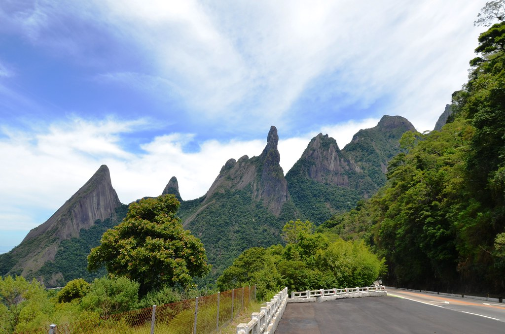
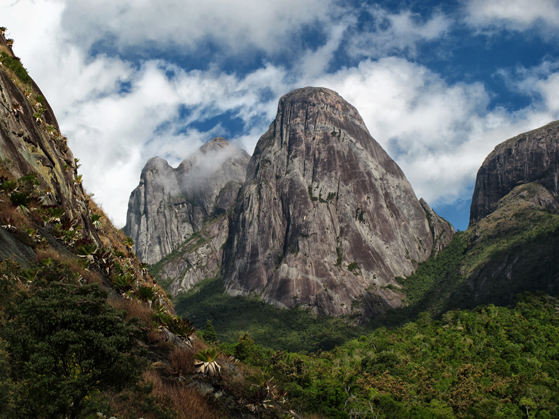
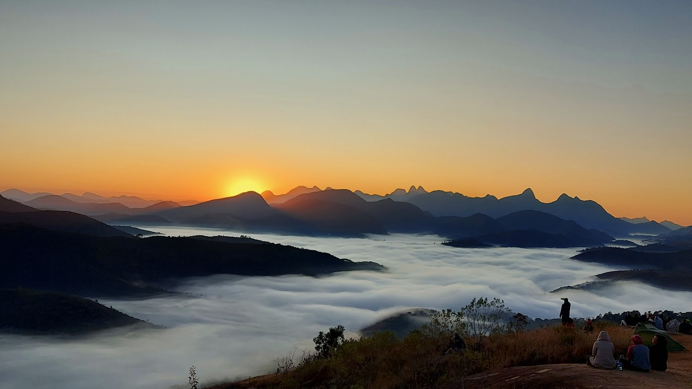
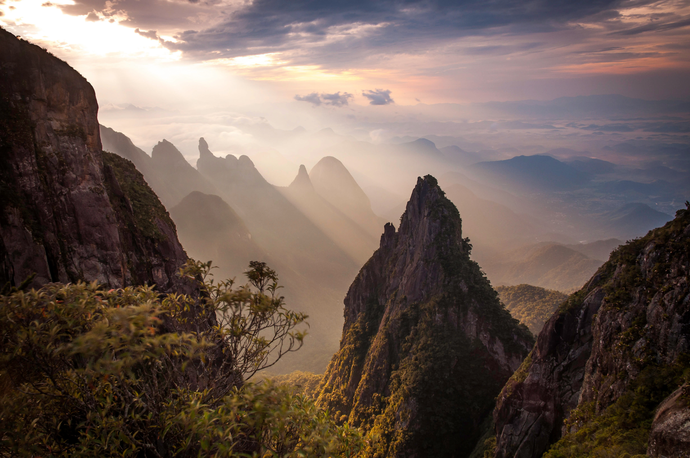

Mostrando 4 cachoeiras

Própria p/ Banho
Cachoeira do Véu da Noiva
🚶 Trilha de nível médio
💧 Queda de ~30m
Uma das mais famosas do Parque Nacional da Serra dos Órgãos, cercada por mata atlântica preservada e com ducha natural refrescante.

Piscina Natural
Cachoeira dos Frades
🚗 Acesso fácil de carro
💧 Poço profundo
Localizada no Parque Estadual, conhecida por suas águas cristalinas, ampla área para relaxar e uma queda d'água de cerca de 10 metros.

Familiar
Cachoeira do Quebra-Frascos
🚶 Caminhada curta
💧 Poço calmo
Acessível no Parque Municipal, ótima para um mergulho refrescante com as crianças após uma caminhada leve e arborizada.

Própria p/ Banho
Poço Dois Irmãos
🚶 15 min da portaria
💧 Água límpida
Um pequeno poço com queda d'água serena no PARNASO, ideal para descanso, contemplação e banho gelado nos dias de sol.